library(tidyverse)
library(dasc2594)
library(gifski)7 Linear Transformations
It is often useful to think of \(\mathbf{A}\mathbf{x}\) as a linear transformation defined by the matrix \(\mathbf{A}\) applied to the vector \(\mathbf{x}\).
A linear transformation is mathematically defined as a function/mapping \(T(\cdot)\) (\(T\) for transformation) from a domain in \(\mathcal{R}^n\) (function input) to a codomain in \(\mathcal{R}^m\) (function output). In shorthand, this is written as \(T:\mathcal{R}^n \rightarrow \mathcal{R}^m\) which is read a “\(T\) maps inputs from the domain \(\mathcal{R}^n\) to the codomain \(\mathcal{R}^m\).” For each \(\mathbf{x} \in \mathcal{R}^n\) (in the domain), \(T(\mathbf{x}) \in \mathcal{R}^m\) is known as the image of \(\mathbf{x}\). The set of all \(T(\mathbf{x})\) for all \(\mathbf{x} \in \mathcal{R}^n\) is known as the range of \(T(\mathbf{x})\). Note that it is possible that the range of \(T(\mathbf{x})\) is not required to be the entire space \(\mathcal{R}^m\) (i.e., the range of the transformation \(T\) might be a subset of \(\mathcal{R}^m\))
Draw figure


In the case of matrix transformations (linear transformations), the function \(T(\mathbf{x}) = \mathbf{A} \mathbf{x}\) where \(\mathbf{A}\) is a \(m \times n\) matrix and \(\mathbf{x} \in \mathcal{R}^n\) is a \(n\)-vector.
- Question: What kind of object is \(\mathbf{A} \mathbf{x}\)?
- scalar
- vector
- matrix
- array
- Question What are the dimensions of \(\mathbf{A} \mathbf{x}\)?
Using the matrix transformation notation, the domain of the transformation \(T\) is \(\mathcal{R}^n\), the codomain of \(\mathcal{T}\) \(\mathcal{R}^m\). The range of the transformation \(T\) is the set of all linear combinations of the columns of \(\mathbf{A}\) (the \(\mbox{span}\{\mathbf{a}_1, \ldots, \mathbf{a}_n\}\)) because the transformation \(T(\mathbf{x}) = \mathbf{A} \mathbf{x}\) is a linear combination \(\sum_{i=1}^n x_i \mathbf{a}_i\) of the columns \(\{\mathbf{a}_i\}_{i=1}^n\) of \(\mathbf{A}\) with coefficients \(x_1, \ldots, x_n\)
Example 7.1 \[ \begin{aligned} \mathbf{A} = \begin{pmatrix} 2 & 4 \\ -3 & 1 \\ -1 & 6 \end{pmatrix} && \mathbf{u} = \begin{pmatrix} 1 \\ 3 \end{pmatrix} && \mathbf{b} = \begin{pmatrix} -2 \\ -11 \\ -15 \end{pmatrix} && \mathbf{c} = \begin{pmatrix} 2 \\ -2 \\ -1 \end{pmatrix} \end{aligned} \]
A <- matrix(c(2, -3, -1, 4, 1, 6), 3, 2)
u <- c(1, 3)
b <- 3 * A[, 1] - 2 * A[, 2]
c <- c(2, -2, -1)- Find the image of \(\mathbf{u}\) using the matrix transformation \(T\) (e.g., calculate \(T(\mathbf{u})\)).
# a
A %*% u [,1]
[1,] 14
[2,] 0
[3,] 17The image of \(\mathbf{u}\) under \(T\) is \(T(\mathbf{u}) = \mathbf{A} \mathbf{u} = \begin{pmatrix} 14 \\ 0 \\ 17 \end{pmatrix}\).
- Find a coefficient vector \(\mathbf{x} \in \mathcal{R}^2\) such that \(T(\mathbf{x}) = \mathbf{b}\).
#b
rref(cbind(A, b)) b
[1,] 1 0 3
[2,] 0 1 -2
[3,] 0 0 0A coefficient vector \(\mathbf{x}\) such that \(T(\mathbf{x}) = \mathbf{b}\) is the solution to the matrix equation \(\mathbf{A} \mathbf{x} = \mathbf{b}\) which can be found from the reduced row echelon form of the augmented matrix above giving \(\mathbf{x} = \begin{pmatrix} 3 \\ -2 \end{pmatrix}\)
- Is there more than one \(\mathbf{x}\) whose image under \(T\) is \(\mathbf{b}?\) In other words, is the solution \(\mathbf{A} \mathbf{x}= \mathbf{b}\) unique?
Use the reduced row echelon form of the matrix equation \(\mathbf{A} \mathbf{x} = \mathbf{b}\) above which gives a unique solution as every (non augmented) column is a pivot. Thus, there is only one solution.
- Determine if \(\mathbf{c}\) is in the range of \(T\). In other words, does the solution \(\mathbf{A} \mathbf{x}= \mathbf{c}\) exist?
# d
rref(cbind(A, c)) # no because this is an inconsistent system of equations c
[1,] 1 0 0
[2,] 0 1 0
[3,] 0 0 1The solution to the matrix equation \(\mathbf{A} \mathbf{x} = \mathbf{c}\) which can be found from the reduced row echelon form of the augmented matrix above results in no solution because the last column (the augmented column) is a pivot column. Thus, the system of equations is inconsistent and \(\mathbf{c}\) cannot be written as a linear combination of the columns of \(\mathbf{A}\) which means that \(\mathbf{c}\) is not in the range of \(T\).
7.1 Linear Transformations
Definition 7.1 A transformation \(T:\mathcal{R}^n \rightarrow \mathcal{R}^m\) is linear if
\(T(\mathbf{u} + \mathbf{v}) = T(\mathbf{u}) + T(\mathbf{v})\) for all \(\mathbf{u}\) and \(\mathbf{v}\) in the domain of \(T\)
\(T(c \mathbf{u}) = c T(\mathbf{u})\) for all scalars \(c\) and all vectors \(\mathbf{u}\) in the domain of \(T\)
Note: Because a linear transformation is equivalent to a matrix transformation, the definition above is equivalent to the following matrix-vector multiplication properties
If \(\mathbf{A}\) is a \(m \times n\) matrix, \(\mathbf{u}\) and \(\mathbf{v}\) are vectors in \(\mathcal{R}^m\) and \(c\) is a scalar, then
- \(\mathbf{A} (\mathbf{u} + \mathbf{v}) = \mathbf{A} \mathbf{u} + \mathbf{A} \mathbf{v}\)
- \(\mathbf{A} (c \mathbf{u}) = (c \mathbf{A}) \mathbf{u}\)
As a consequence of the previous definition, the following properties hold for scalars \(c\) and \(d\) and vectors \(\mathbf{u}\) and \(\mathbf{v} \in \mathcal{R}^m\)
- \(T(\mathbf{0}) = \mathbf{0}\)
- \(T(c \mathbf{u} + d \mathbf{v}) = c T(\mathbf{u}) + d T(\mathbf{v})\)
- Show why in class
These properties give rise to the following statement for scalars \(c_1, \ldots, c_m\) and vectors \(\mathbf{u}_1, \ldots, \mathbf{u}_m \in \mathcal{R}^n\)
- \(T(c_1 \mathbf{u}_1 + \ldots + c_m \mathbf{u}_m) = c_1 T(\mathbf{u}_1) + \ldots + c_m T(\mathbf{u}_m)\)
The statements above for linear transformations are equivalent to the matrix statements where \(\mathbf{A}\) is a \(m \times n\) matrix, \(\mathbf{u}\) and \(\mathbf{v}\) are vectors in \(\mathcal{R}^m\) and \(c\) is a scalar:
- \(\mathbf{A} \mathbf{0} = \mathbf{0}\)
- \(\mathbf{A}(c \mathbf{u} + d \mathbf{v}) = c \mathbf{A} \mathbf{u} + d \mathbf{A} \mathbf{v}\)
And for a \(m \times n\) matrix \(\mathbf{A}\), scalars \(c_1, \ldots, c_m\), and vectors \(\mathbf{u}_1, \ldots, \mathbf{u}_m \in \mathcal{R}^n\)
- \(\mathbf{A}(c_1 \mathbf{u}_1 + \ldots + c_m \mathbf{u}_m) = c_1 \mathbf{A}\mathbf{u}_1 + \ldots + c_m \mathbf{A} \mathbf{u}_m\)
7.2 Types of matrix transformations
The basic types of matrix transformations include
- contractions/expansions
- rotations
- reflections
- shears
- projections
For the following examples, we will consider the unit vectors \(\mathbf{u} = \begin{pmatrix} 1 \\ 0 \end{pmatrix}\) and \(\mathbf{v} = \begin{pmatrix} 0 \\ 1 \end{pmatrix}\) and apply different linear transformations using the matrix \(\mathbf{A}\).
To build the matrix transformations, we use the dasc2594 package and build matrix transformations based on code from https://www.bryanshalloway.com/2020/02/20/visualizing-matrix-transformations-with-gganimate/.
7.2.1 Contractions/Expansions
Horizonal Expansion
The matrix below gives a horizontal expansion when \(x > 1\)
\[ \mathbf{A} = \begin{pmatrix} x & 0 \\ 0 & 1 \end{pmatrix} \]
- In the example below, we set \(x = 2\) and generate the transformation.
transformation_matrix <- tribble(
~ x, ~ y,
2, 0,
0, 1) %>%
as.matrix()
p <- plot_transformation(transformation_matrix)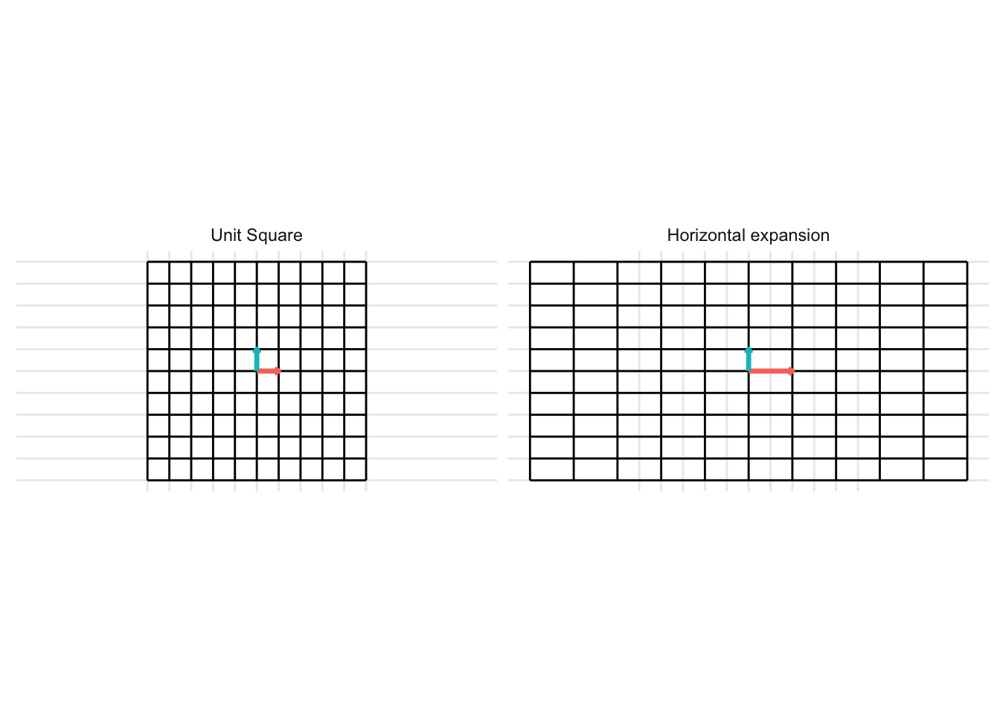
Horizonal Contraction
The matrix below gives a horizontal contraction when \(x < 1\) * Horizontal contraction when \(x < 1\)
\[ \mathbf{A} = \begin{pmatrix} x & 0 \\ 0 & 1 \end{pmatrix} \]
- In the example below, we set \(x = 0.5\)
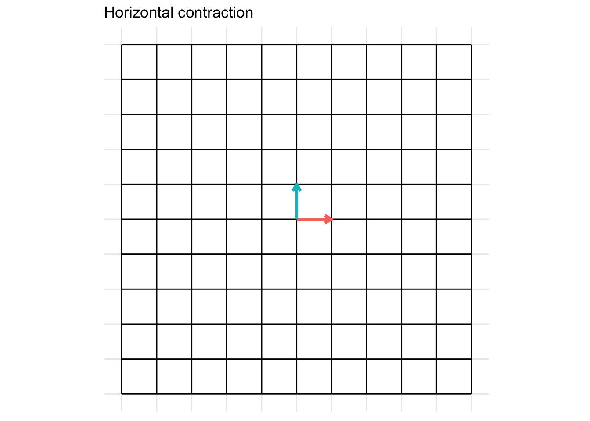

Vertical Expansion
The matrix below gives a vertical expansion when \(x > 1\)
\[ \mathbf{A} = \begin{pmatrix} 1 & 0 \\ 0 & x \end{pmatrix} \]
- In the example below, we set \(x = 2\)
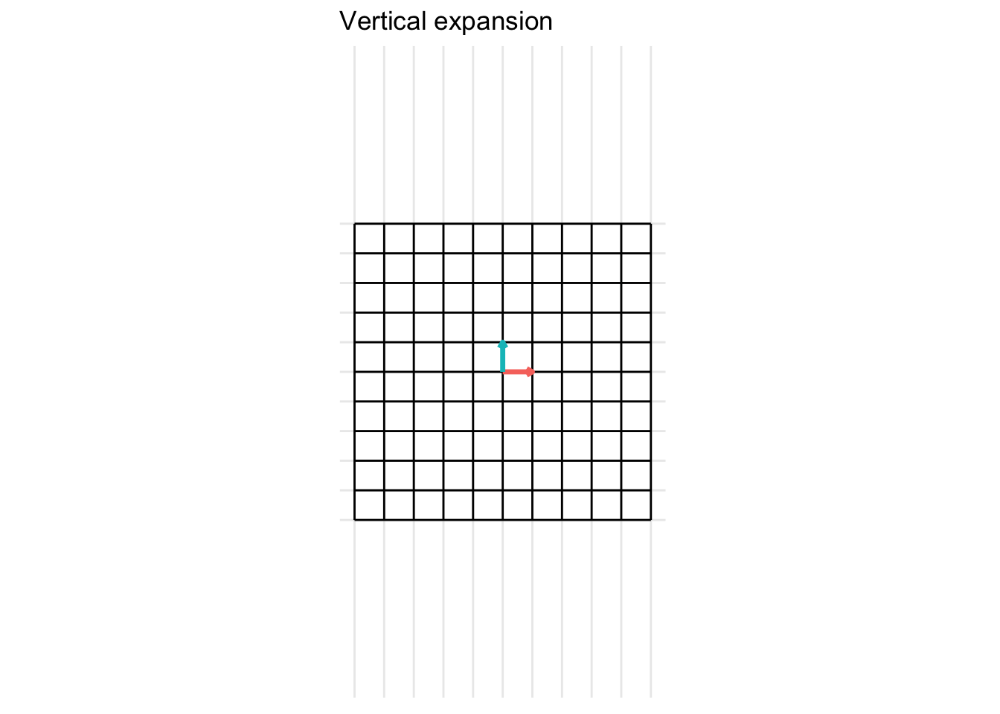
Vertical Contraction
The matrix below gives a vertical contraction when \(x < 1\)
\[ \mathbf{A} = \begin{pmatrix} 1 & 0 \\ 0 & x \end{pmatrix} \]
- In the example below, we set \(x = 0.5\)
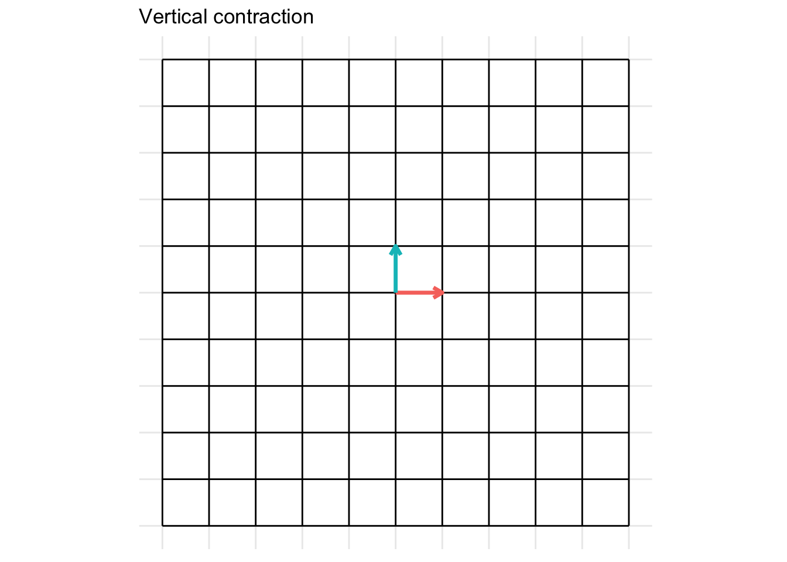

7.2.2 Rotations
Rotation by 90 degrees
Rotations in 2D of an angle \(\theta \in [0, 2\pi]\) take the form of
\[ \mathbf{A} = \begin{pmatrix} \cos(\theta) & -\sin(\theta) \\ \sin(\theta) & \cos(\theta) \end{pmatrix} \]
For example, a rotation of 90 degrees counter-clockwise (\(\theta = \frac{\pi}{2}\)) is given by the transformation matrix
\[ \mathbf{A} = \begin{pmatrix} \cos(\frac{\pi}{2}) & -\sin(\frac{\pi}{2}) \\ \sin(\frac{\pi}{2}) & \cos(\frac{\pi}{2}) \end{pmatrix} = \begin{pmatrix} 0 & -1 \\ 1 & 0 \end{pmatrix} \]
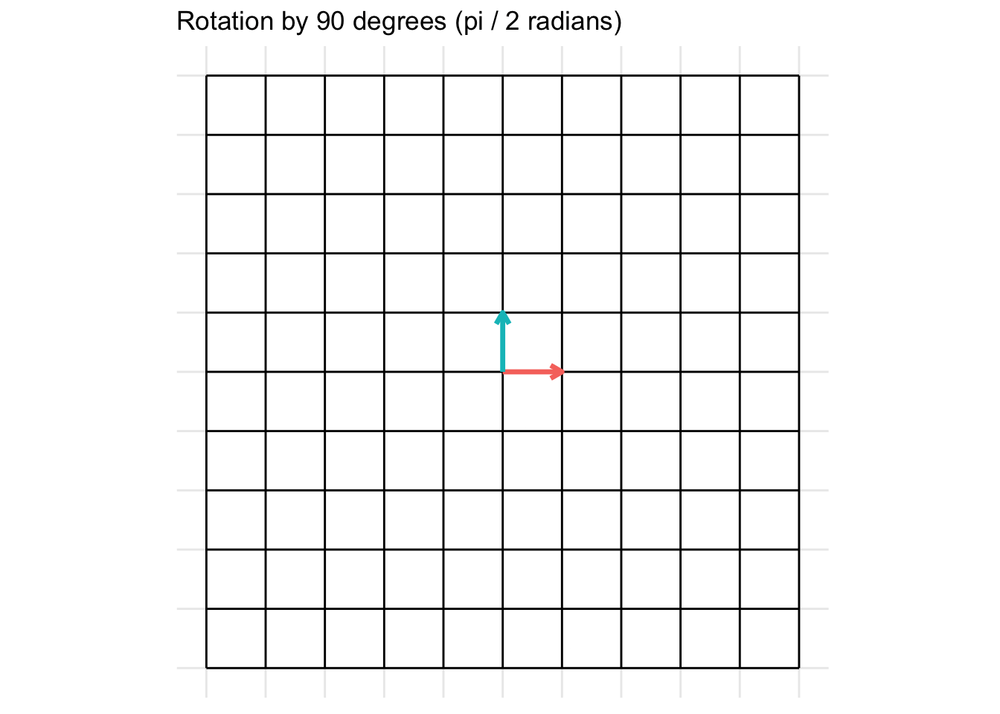

Another example is for a rotation of 45 degrees clockwise (\(\theta = -\frac{\pi}{4}\)) is given by the transformation matrix
\[ = \begin{pmatrix} \cos(\frac{\pi}{4}) & -\sin(\frac{\pi}{4}) \\ \sin(\frac{\pi}{4}) & \cos(\frac{\pi}{4}) \end{pmatrix} = \begin{pmatrix} \frac{\sqrt{2}}{2} & -\frac{\sqrt{2}}{2} \\ \frac{\sqrt{2}}{2} & \frac{\sqrt{2}}{2} \end{pmatrix} \]
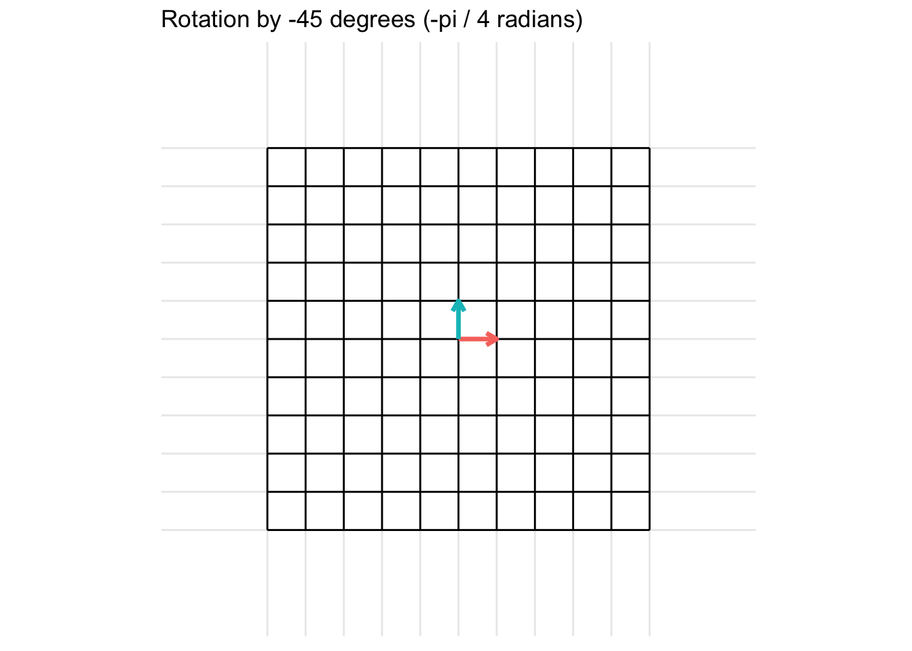

7.2.3 Reflections
Reflection across the x-axis
The matrix below gives a reflection about the x-axis
\[ \mathbf{A} = \begin{pmatrix} 1 & 0 \\ 0 & -1 \end{pmatrix} \]

Reflection across the y-axis
The matrix below gives a reflection about the y-axis
\[ \mathbf{A} = \begin{pmatrix} -1 & 0 \\ 0 & 1 \end{pmatrix} \]
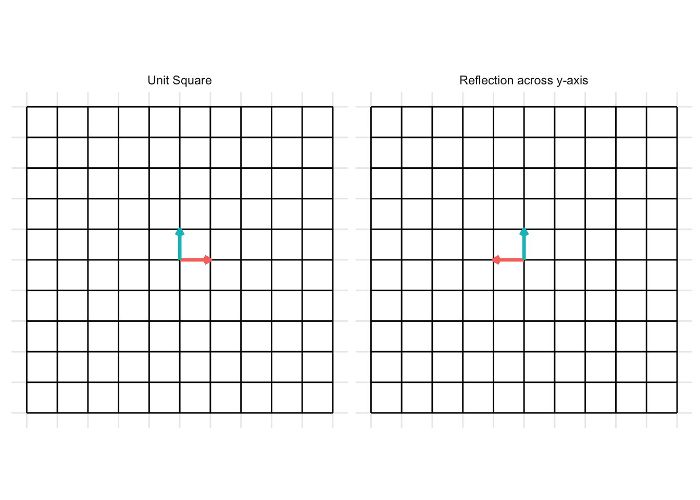
Reflection across the line y = x
\[ \mathbf{A} = \begin{pmatrix} 0 & 1 \\ 1 & 0 \end{pmatrix} \]
- In the example below, we set \(x = 0.5\)
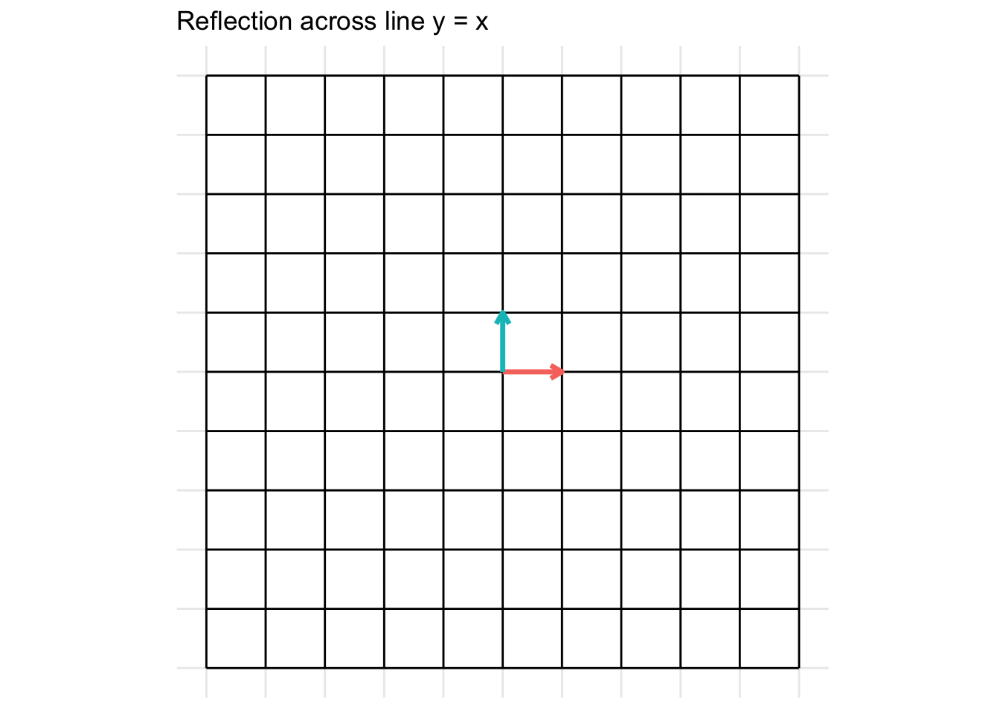

Reflection across the line y = - x
\[ \mathbf{A} = \begin{pmatrix} 0 & -1 \\ -1 & 0 \end{pmatrix} \]
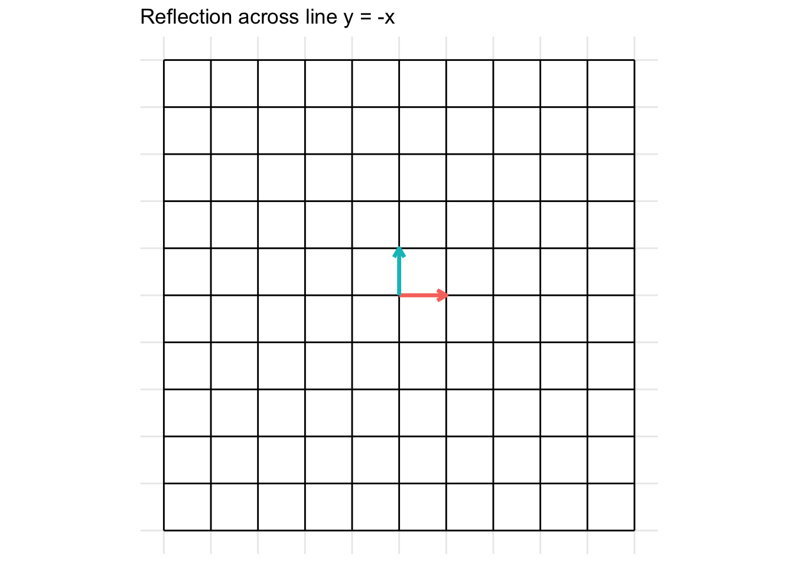

Reflection across the origin (0, 0)
\[ \mathbf{A} = \begin{pmatrix} -1 & 0 \\ 0 & -1 \end{pmatrix} \]
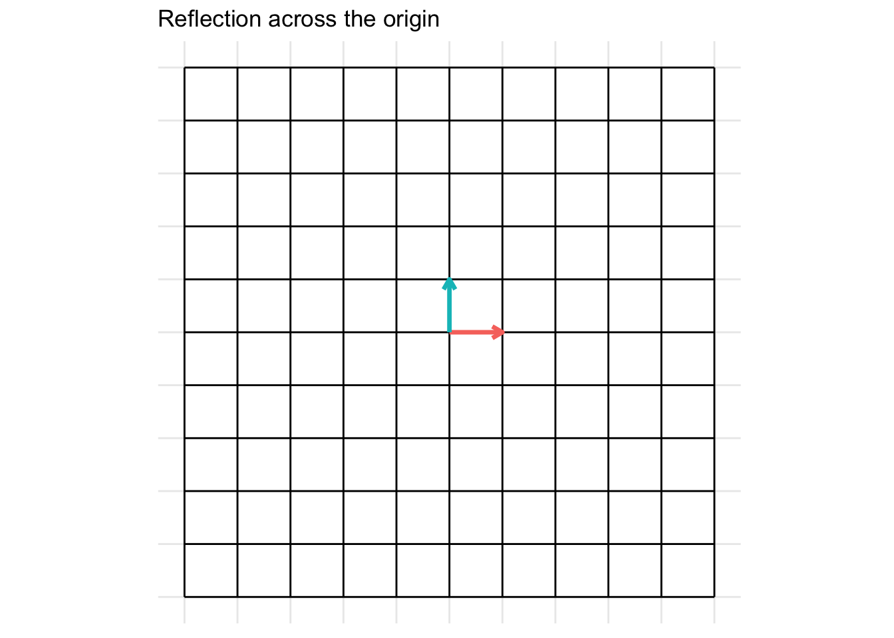

7.2.4 Shears
A shear transformation is like stretching play-dough if it was possible to stretch all parts of the dough uniformly (rather than some sections getting stretched more than others).
Horizontal Shear
\[ \mathbf{A} = \begin{pmatrix} 1 & x \\ 0 & 1 \end{pmatrix} \]
For the example below, we plot a horizontal shear with \(x = 2\).

Vertical Shear
\[ \mathbf{A} = \begin{pmatrix} 1 & 0 \\ x & 1 \end{pmatrix} \]
For the example below, we plot a horizontal shear with \(x = 2\).
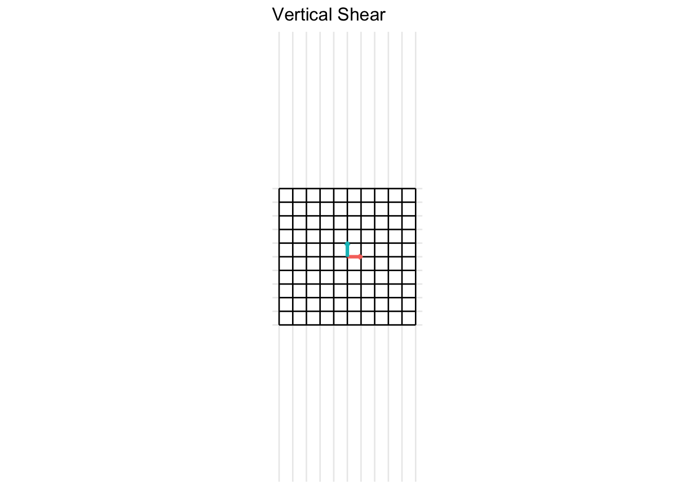

7.2.5 Projections
A projection is a mapping \(T:\mathcal{R}^n \rightarrow \mathcal{R}^n\) from one space (\(\mathbf{R}^n\)) to itself (\(\mathbf{R}^n\)) such that \(T^2 = T\)
Project onto the x-axis
\[ \mathbf{A} = \begin{pmatrix} 1 & 0 \\ 0 & 0 \end{pmatrix} \]
For the example below, we plot a projection onto the x-axis
Project onto the y-axis
\[ \mathbf{A} = \begin{pmatrix} 0 & 0 \\ 0 & 1 \end{pmatrix} \]
For the example below, we plot a projection onto the y-axis
7.2.6 Identity
The identity transformation is the transformation that leaves the vector input unchanged. The identity matrix is typically written as \(\mathbf{I}\)
\[ \mathbf{I} = \begin{pmatrix} 1 & 0 \\ 0 & 1 \end{pmatrix} \]

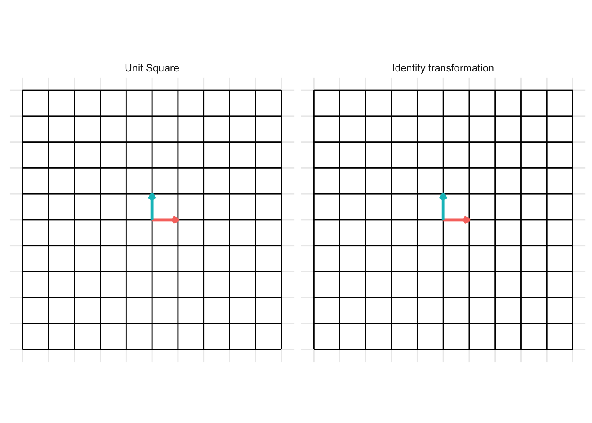
7.3 Properties of matrix transformations
7.3.1 One-to-one transformations
Definition 7.2 A transformation \(T:\mathcal{R}^n \rightarrow \mathcal{R}^m\) is called one-to-one if every vector \(\mathbf{b}\) in the image \(\mathcal{R}^m\), the equation \(T(\mathbf{x}) = \mathbf{b}\) has at most one solution in \(\mathcal{R}^n\).


The following statements are equivalent was of saying \(T:\mathcal{R}^n \rightarrow \mathcal{R}^m\) is one-to-one:
For every \(\mathbf{b} \in \mathcal{R}^m\) (for every vector in the image), the equation \(T(\mathbf{x}) = \mathbf{b}\) has either zero or one solution
Every different input into the function \(T(\cdot)\) has a different output
If \(T(\mathbf{u}) = T(\mathbf{v})\) then \(\mathbf{u} = \mathbf{v}\)
The following statements are equivalent was of saying \(T:\mathcal{R}^n \rightarrow \mathcal{R}^m\) is not one-to-one:
There exists as least one \(\mathbf{b} \in \mathcal{R}^m\) such that the equation \(T(\mathbf{x}) = \mathbf{b}\) has more than one solution
There are at least two different inputs into the function \(T(\cdot)\) that have the same output
There exist vectors \(\mathbf{u} \neq \mathbf{v} \in \mathcal{R}^n\) such that \(T(\mathbf{u}) = T(\mathbf{v})\)
Theorem 7.1 Let \(\mathbf{A}\mathbf{x}\) be the matrix representation of the linear transformation \(T(\mathbf{x})\) for the \(m \times n\) matrix \(\mathbf{A}\). Then the following statements are equivalent:
\(T\) is one-to-one.
For every \(\mathbf{b} \in \mathcal{R}^m\), the equation \(T(\mathbf{x}) = \mathbf{b}\) has at most one solution.
For every \(\mathbf{b} \in \mathcal{R}^m\), the equation \(\mathbf{A}\mathbf{x} = \mathbf{b}\) has a unique solution or is inconsistent.
The equation \(\mathbf{A}\mathbf{x} = \mathbf{0}\) has only a trivial solution.
The columns of \(\mathbf{A}\) are linearly independent.
\(\mathbf{A}\) has a pivot in every column.
The range of \(\mathbf{A}\) has dimension \(n\)
- Example: is the following matrix one-to-one?
\[ \mathbf{A} = \begin{pmatrix} 1 & 0 \\ 0 & 1 \\ 1 & 1 \end{pmatrix} \]
- Example: is the following matrix one-to-one?
\[ \mathbf{A} = \begin{pmatrix} 1 & 0 & 0 \\ 0 & 1 & 0 \\ 1 & 1 & 0 \end{pmatrix} \]
Note: Matrices that are wider than they are tall are not one-to-one transformations. (This does not mean that all tall matrices are one-to-one)
7.3.2 Onto transformations
Definition 7.3 A transformation \(T:\mathcal{R}^n \rightarrow \mathcal{R}^m\) is called onto if, for every vector \(\mathbf{b} \in \mathcal{R}^m\), the equation \(T(\mathbf{x}) = \mathbf{b}\) has at least one solution \(\mathbf{x} \in \mathcal{R}^n\)
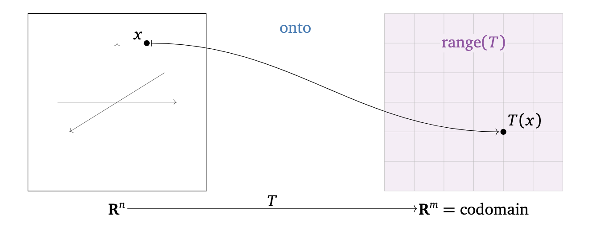

The following are equivalent ways of saying that \(T:\mathcal{R}^n \rightarrow \mathcal{R}^m\) is onto:
The range of \(T:\mathcal{R}^n \rightarrow \mathcal{R}^m\) is equal to the codomain of \(T:\mathcal{R}^n \rightarrow \mathcal{R}^m\)
Every vector in the codomain is the output of some input vector
The following are equivalent ways of saying that \(T:\mathcal{R}^n \rightarrow \mathcal{R}^m\) is not onto:
The range of \(T:\mathcal{R}^n \rightarrow \mathcal{R}^m\) is smaller than the codomain of \(T:\mathcal{R}^n \rightarrow \mathcal{R}^m\).
There exists a vector \(\mathbf{b} \in \mathcal{R}^m\) such that the equation \(T(\mathbf{x})\) does not have a solution.
There is a vector in the codomain that is not the output of any input vector.
Theorem 7.2 Let \(\mathbf{A}\mathbf{x}\) be the matrix representation of the linear transformation \(T(\mathbf{x})\) for the \(m \times n\) matrix \(\mathbf{A}\). Then the following statements are equivalent:
\(T\) is onto
\(T(\mathbf{x}) = \mathbf{b}\) has at least one solution for every \(\mathbf{b} \in \mathcal{R}^m\).
The equation \(\mathbf{A}\mathbf{x} = \mathbf{b}\) is consistent for every \(\mathbf{b} \in \mathcal{R}^m\).
The columns of \(\mathbf{A}\) span \(\mathcal{R}^m\)
\(\mathbf{A}\) has a pivot in every row
The range of \(T:\mathcal{R}^n \rightarrow \mathcal{R}^m\) has dimension \(m\)
Example:
Example: is the following matrix onto?
\[ \mathbf{A} = \begin{pmatrix} 1 & 1 & 0 \\ 0 & 1 & 1 \end{pmatrix} \]
- Example: is the following matrix one-to-one?
\[ \mathbf{A} = \begin{pmatrix} 1 & 0 \\ 0 & 1 \\ 1 & 0 \end{pmatrix} \]
Note: Matrices that are taller than they are wide are not onto transformations. (This does not mean that all wide matrices are onto)